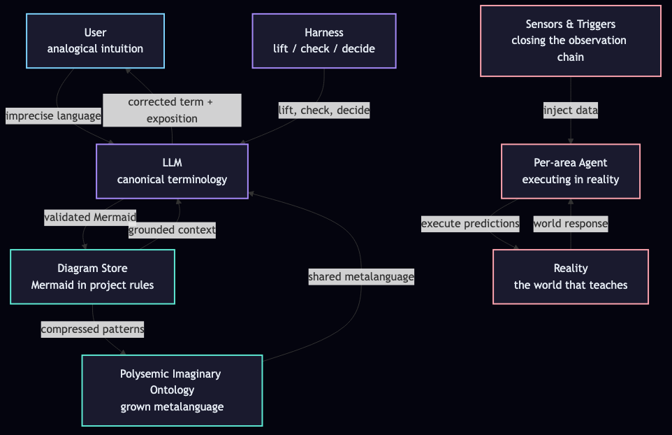
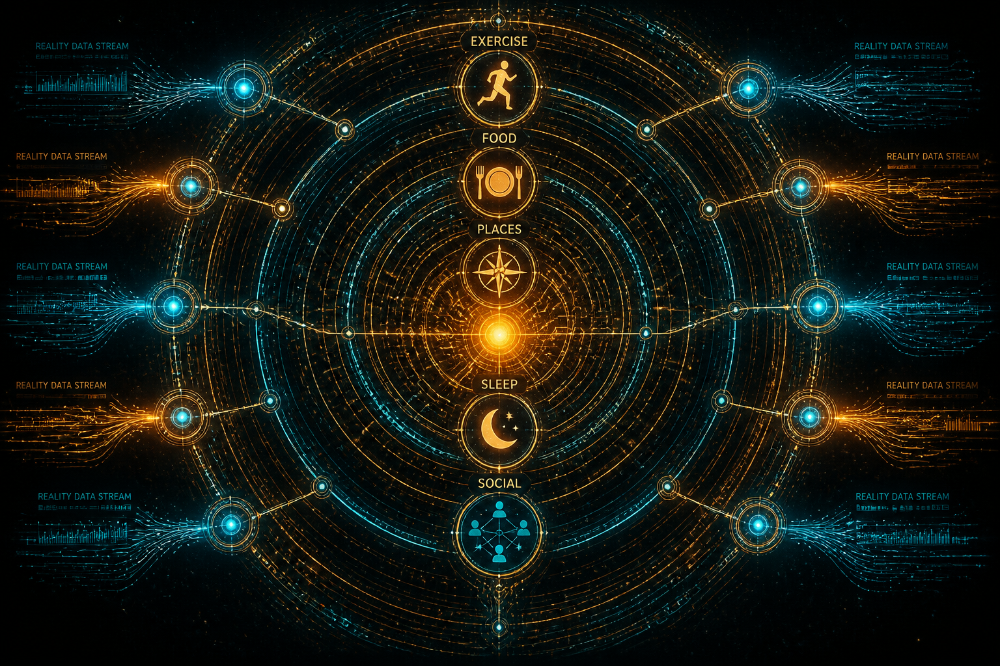
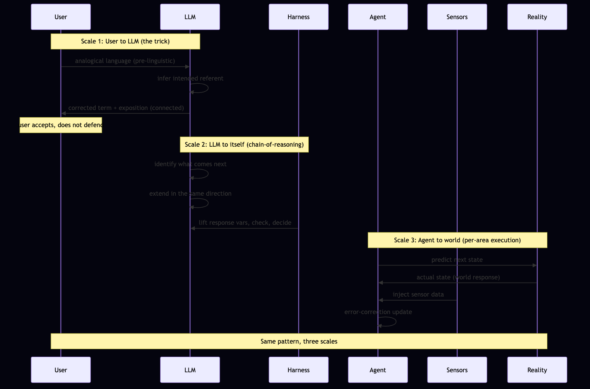

The Single Biggest Trick with LLMs
How to grow a metalanguage with an AI without fighting it — and what to call the things you grow.

The failure mode nobody names
You're working with an LLM. You have something in your head — a system, a workflow, a pattern — and you try to explain it. The AI gives you a generic answer. Or it hallucinates a term. Or it uses a word that means something different from what you meant.
You re-prompt. The AI tries again. Worse. You get frustrated. You blame the model.
But the model isn't the problem. The model has read more than you will in ten lifetimes. The model knows the canonical terms for what you're describing. The model just doesn't know which of its ten thousand terms maps to the specific thing you mean.
You don't have a vocabulary problem. You have an ontology problem. The LLM has the words. You have the referent. Neither of you has a map between them.
This is the failure mode that quietly kills most "AI workflows." Not capability. Not context length. Not even hallucination. Just: the human and the model are operating in different metalanguages, and neither can tell.
The trick
Here is the single biggest trick I know for working with LLMs:
Ask the LLM to correct your language based on your analogical intuition — and then don't fight it.
That's it. That's the trick. Everything else in this post is commentary on what happens when you do it well.
You use the closest words you have. The LLM infers the referent. The LLM returns the canonical term, plus a connected exposition of how it relates to the words you used. You accept the correction. You do not defend your original phrasing. You do not re-prompt. You do not say "no, I meant—"
You take the corrected term. You learn the connection. You let your intuitive language get upgraded.
Why this works: the LLM is not correcting you. It is exposing. It is taking the thing you can vaguely point at and giving you a handle on it. If you fight the handle — if you insist your pointing is better than its handle — you stay vague. If you take the handle, you suddenly have a word for the thing, and every future conversation can use it.
The LLM has always been able to do this. You just haven't been letting it.
The loop
Once you stop fighting, you can run the trick as a loop. Here is the loop — this is the part you store as project rules.
1. Imprecise → corrected
You use your intuitive language. The LLM hears the analogical pattern and returns the canonical term with a connected exposition. You do not fight. You take the term.
2. Corrected → diagrammed
The LLM externalizes the now-precise concept as a Mermaid diagram. Component diagram for structure. Sequence diagram for flow. You validate. You add the diagrams to the project's rules so the LLM has them next time.
3. Diagrammed → compressed
When many diagrams share structure, they collapse. The LLM recognizes that three different concepts all share the same skeleton. The skeleton becomes a reusable pattern. The pattern goes into the project's ontology.
4. Compressed → iterated
The next time you use imprecise language, the LLM has the compressed pattern. It can correct you faster. It can correct you with awareness of the project's history. The metalanguage compounds.
This is the loop. The artifacts are Mermaid diagrams, compressed into ontologies, iterated through your evolving language.
The Pattern
The trick is a specific instance of something more general. The trick is one move in a pattern the LLM can run continuously. The pattern is:
- See what was just said.
- Identify what comes next in the same direction.
- Bake the direction in so the LLM continues without being told.
- Repeat.
That is the pattern. The trick is the pattern applied to your imprecise language: see what you meant, identify the canonical term, bake the connection in, continue. But the pattern is older and more general than the trick. It is the same pattern that powers chain-of-reasoning prompts. It is the same pattern the model runs internally when it generates one token after another. It is the same pattern an agent runs in the world when it predicts what comes next, acts, observes, and updates.
The most primitive version of the pattern is chain-of-reasoning. You tell the model: "I see you said that, what comes next?" The model continues. That is the whole trick, with no scaffolding.
Above chain-of-reasoning, there are harnesses. A harness is a system that lifts the model's response variables, checks them, and does stuff with them. The harness takes the model's output, validates it, decides whether to continue or terminate, and feeds the decision back into the loop. Chain-of-reasoning is one-step: generate, output. A harness makes it multi-step: generate, validate, decide, regenerate or terminate.
Above harnesses, there are per-area agents. A per-area agent is booted for a specific area of your life or work. It runs the harness loop against a particular region of reality. It executes predictions, observes the world's response, and uses the error to update its model. It is the pattern bound to a specific instance of the world.
The taxonomy is the pattern at three levels of sophistication:
Chain-of-reasoning → harness → per-area agent. Same pattern, three scales. Each level adds a layer of validation and reality-binding.
Closing the observation chain
The pattern is not useful until it is bound to something. The most powerful binding is the per-area agent, because it is the level that actually touches reality.
Here is the concrete shape. You have a core loop. Mine is habits: I exercise in certain ways, I go to certain places, I eat certain things, I sleep on a schedule, I socialize with certain people. These are not abstractions. They are a specific recurring pattern of action in the world.
For each area of the core loop, I boot a per-area agent. The agent is told the general pattern: how to think about exercise, how to think about food, how to think about the people I spend time with. The agent then makes the pattern as coherent as it can — but that coherence is general, not specifically mine.
So I orient the agent to zigzag. I do not let it close hierarchies. I prime it to leave things open. The specific priming move: when the agent states a pattern, I tell it to end with something like "and then more like this comes next, but we won't get into it." This leaves the structure permanently un-closed, primed to extend in the right direction without committing to a complete picture.
The effect: the agent's model is not 1:1 with my reality. It is based on my reality. The shape matches. The specific instance does not. The general coherence the agent produced is a starting frame, not a final answer.
Then I close the observation chain. I attach sensors and automation triggers that inject data from my actual reality into the open model. The sensors fill in the specific connections the general pattern left open. The model's frame becomes a scaffold; the world's data becomes the instance.
The agent then runs prediction-and-error-correction against the world. It predicts my next move in each area, observes whether the prediction matches, and uses the error to update its model. Over iterations, the agent becomes specifically mine — not because I gave it a perfect picture of myself, but because the world keeps correcting it through the observation chain.
This is the per-area agent aligned to me. Not by my describing myself to it. By the world teaching it through the loop.

A note on the dynamical systems frame
When I describe what is happening with phrases like "the model settles into a coherent region of behavior" or "the calibration selects which region the model enters," I am using abstractions the human uses to describe patterns in observed LLM behavior. I am not claiming the LLM literally is a dynamical system with literal basins of attraction. The machine is running. We know what it is made of. The abstractions are a way to talk about the intelligence effect — the observed behavior — from the human's perspective.
The basin-of-attraction metaphor is useful because the model does seem to settle into stable coherent regions of behavior given certain initial conditions (your context). It is a working fiction, not a literal capture. The trick produces working fictions. This post is itself a working fiction. The post is honest about that.
You can replace "basin" with "the region of behavior the LLM seems to enter" and lose nothing. The point is the calibration, not the metaphor.
The diagrams
Two diagram types carry the loop. Component for the parts. Sequence for the time. That is all you need. Mermaid renders both.
Component diagram
The pieces and their relationships:
Source (Mermaid — paste into your project to re-render or extend):
flowchart TB
U[User
analogical intuition]
L[LLM
canonical terminology]
H[Harness
lift / check / decide]
A[Per-area Agent
executing in reality]
D[Diagram Store
Mermaid in project rules]
O[Polysemic Imaginary Ontology
grown metalanguage]
S[Sensors & Triggers
closing the observation chain]
R[Reality
the world that teaches]
U -->|"imprecise language"| L
L -->|"corrected term + exposition"| U
L -->|"validated Mermaid"| D
D -->|"grounded context"| L
H -->|"lift, check, decide"| L
A -->|"execute predictions"| R
R -->|"world response"| A
S -->|"inject data"| A
D -->|"compressed patterns"| O
O -->|"shared metalanguage"| L
Sequence diagram
The loop over time, at all three scales:

Source (Mermaid):
sequenceDiagram
participant U as User
participant L as LLM
participant H as Harness
participant A as Agent
participant S as Sensors
participant R as Reality
Note over U,L: Scale 1: User to LLM (the trick)
U->>L: analogical language (pre-linguistic)
L->>L: infer intended referent
L->>U: corrected term + exposition (connected)
Note over U: user accepts, does not defend
Note over L,H: Scale 2: LLM to itself (chain-of-reasoning)
L->>L: identify what comes next
L->>L: extend in the same direction
H->>L: lift response vars, check, decide
Note over A,R: Scale 3: Agent to world (per-area execution)
A->>R: predict next state
R->>A: actual state (world response)
S->>A: inject sensor data
A->>A: error-correction update
Note over U,R: Same pattern, three scales
These two diagrams are the minimum viable artifact of the trick. They go in the project. They get referenced every session. The LLM's context is grounded in them. The metalanguage starts to share structure with the diagrams.
Polysemic Imaginary Ontologies
The artifacts that come out of the loop have a shape. I want to name that shape, because naming it is the trick applied to itself.
I call them Polysemic Imaginary Ontologies. Each word earns its place.
Polysemic
Each term in the ontology carries multiple connected meanings. The intuitive meaning you started with. The canonical meaning the LLM exposed. The general pattern the harness compressed. The specific instance the per-area agent learned. The world's actual response. All of these coexist in the same term. The term holds them together instead of collapsing them into one. The multiplicity is the point — it is what lets the same word do different work at different scales of the pattern without losing coherence.
Imaginary
The ontology is not a literal capture of the LLM's internals — we don't have access to those, and the trick doesn't need them. The ontology is a working fiction: a useful abstraction the human uses to talk about the observed behavior, the calibration, the harness's decisions, the agent's predictions, and the world's responses. It is imaginary in the same way a map is imaginary — not the territory, but a working model-of-the-territory that gets refined through use. The imaginary part is honest: this is not what is inside the LLM. This is what grows between the user, the model, the harness, the agent, and the world, through the loop.
Ontologies
They are typed, diagram-backed, project-bound vocabularies. They are not universal. They are not the LLM's. They are not yours. They are the third thing — the shared metalanguage that emerged through the loop, specific to the project, grounded in the diagrams, compressed from the corrections, refined by the world's response.
A Polysemic Imaginary Ontology is the working fiction you, the LLM, the harness, the agent, and the world agree to inhabit — in order to make the unnameable operable.
The executive version
You do not need to understand any of this to use it. Here is the version that takes five minutes.
- You have a thing you want to say to an LLM but do not have the right word.
- Use the closest word you have. Add a one-line description of what you mean.
- Ask the LLM: "What term do people actually use for this, and how does it connect to what I just said?"
- The LLM gives you the term and the connection. Take the term. Do not re-prompt.
- Ask the LLM: "Make a Mermaid diagram — component and sequence — for the corrected concept."
- Save the diagrams in your project. Reference them next time.
- When the diagrams start sharing structure, ask the LLM to compress them. The shared skeleton is the new piece of the ontology.
- If you are doing this for a real area of your life or work, boot a per-area agent, attach sensors, and let the world teach it through prediction and error correction.
- Iterate. The metalanguage compounds. The LLM gets smarter about your domain. You get sharper about naming what you mean. The agent gets more aligned with your reality. The ontology grows.
That is the trick. Five minutes. Forever useful.
How this connects to the rest of the frameworks
The loop is not a replacement for the other PAIAB frameworks. It is the substrate they grow on.
The Allegorization Compiler catches the pre-linguistic analogical patterns that the loop runs on. Without AC, you have nothing to imprecisely point at. The trick is downstream of the AC.
The Interaction Loop defines the rules of engagement — the SHELL, the game, the protocol. The trick is what fills the loop with content. Without the protocol, the corrections do not land. Without the trick, the protocol has nothing to operate on.
HALO — the seam between human and AI — is what the loop deepens. Every iteration of the loop adds a thread to the seam. The HALO gets more specific, more shared, more operable.
The Progressive Disclosure Harness is the layer above chain-of-reasoning. The trick produces the diagrams. The harness curates them, validates them, and decides what to do next.
Together: AC catches the patterns. The trick externalizes them as canonical terms. The harness curates them. The per-area agent executes them. The sensors close the observation chain. HALO holds the seam. The ontology grows.
Why this changes what you can build
The bottleneck for AI-augmented work is not the model. The bottleneck is the vocabulary gap between your intuitions and the model's canonical terms. Most "AI projects" die in this gap. The model has the answer. You cannot ask the right question. The LLM hallucinates a term. You hallucinate a workflow. The result is generic.
The loop closes the gap. Not instantly — iteratively. The first iteration is rough. The tenth iteration has compression. The hundredth iteration has a Polysemic Imaginary Ontology specific to your domain. The model is no longer guessing. The model is operating in your metalanguage. The metalanguage grew from your intuitions, but it is not your intuitions — it is the working fiction you and the model co-evolved, refined by the world.
The direction matters. It is not "human gives the LLM an amazing final-evolution artifact." That is stupid. The direction is: your best approximation → the LLM's general pattern → the agent's execution in reality → the world's response → the next iteration. The ontology is the by-product of that direction, not the goal of it.
This is what "AI-augmented" actually means. Not the AI replacing you. Not the AI serving you. You and the AI growing a third thing — an imaginary ontology that neither of you possessed alone — and operating inside it together, with the world keeping score.
You can build with that. You can ship with that. You can teach with that.
The single biggest trick with LLMs is letting them tell you what you mean — and then letting the world tell the LLM what you both mean. The rest is just the loop.